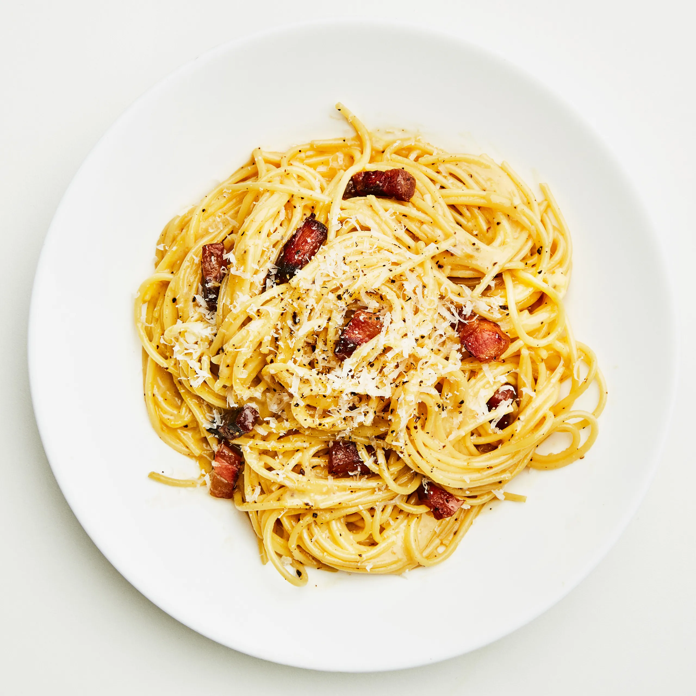

Carbonara

Description
Carbonara is a simple, yet infinitely delicious pasta that is sure to impress anyone you cook for. This recipe is in keeping with the traditional way that carbonara is prepared in Italy.
Ingredients
- 175g guanciale
- 2 large eggs
- 2 egg yolks
- 100g parmigiano reggiano, finely shredded
- 1/4 teaspoon black pepper
- 1 tablespoon cooking salt
- 1/2 cup pasta cooking water
- 1 garlic clove, finely minced
Instructions
- Cut the guanciale into 0.5cm / 1/5" thick slices then into batons.
- Place eggs and yolks in a large bowl. Whisk to combine. Then stir in the parmesan and pepper.
- Bring 4 litres (4 quarts) of water to the boil with the salt. Add pasta and cook per the packet directions.
- Just before draining, scoop out 1 cup of pasta cooking water, then drain the pasta.
- While the pasta is cooking, place guanciale in a non stick pan over medium high heat. Cook for 4 to 5 minutes until golden. No oil needed – as the guanciale heats up, the fat will melt so it fries in its own fat. If using garlic, add it in the last minute.
- Tip the hot pasta into the pan and toss to coat in guanciale fat.
- Transfer the pasta and any residual fat in the pan into the bowl with the egg. Add 1/2 cup (125 ml) pasta cooking water. Stir vigorously using the handle of a wooden spoon for 1 minute and watch as the sauce transforms from watery to creamy and clings to the pasta strands!
- Transfer into warm bowls and serve immediately.